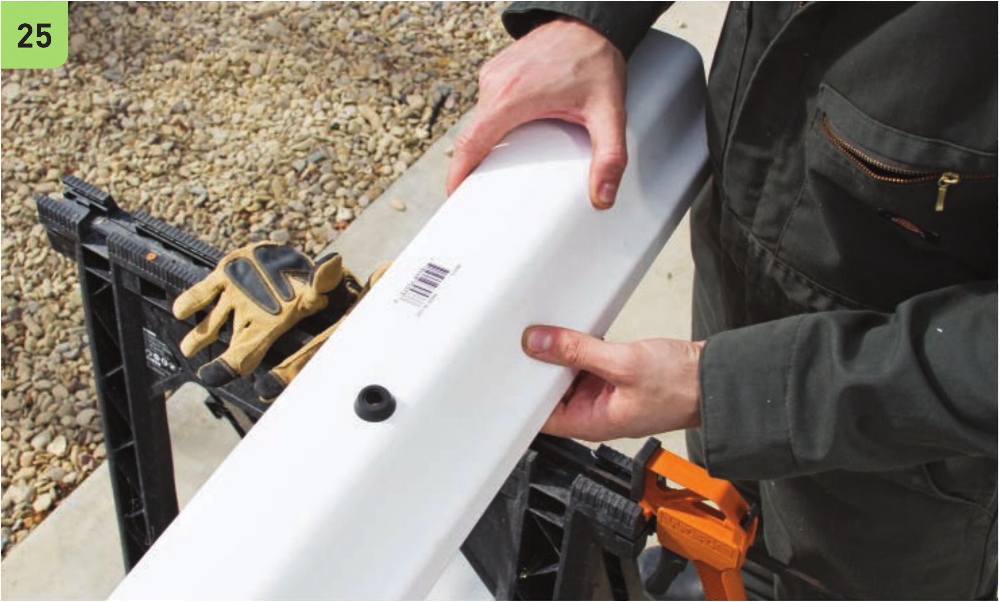
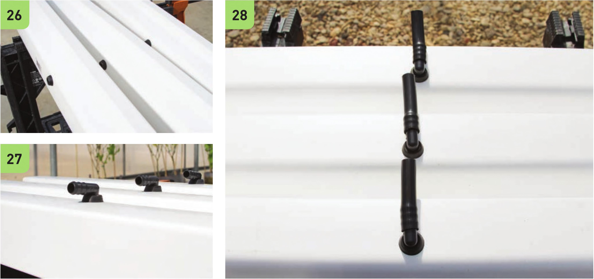

25 Insert the Vi grommet into the hole. If the hole is too small, use the deburring tool to widen the hole. 26 Repeat steps 24-25 for each of the three 33" gutter segments. 27 Insert a Vi elbow into the Vi grommet in each gutter section. 28 Cut three 4" segments of Vi tubing. Attach to the elbows. HYDROPONIC GROWING SYSTEMS 127

